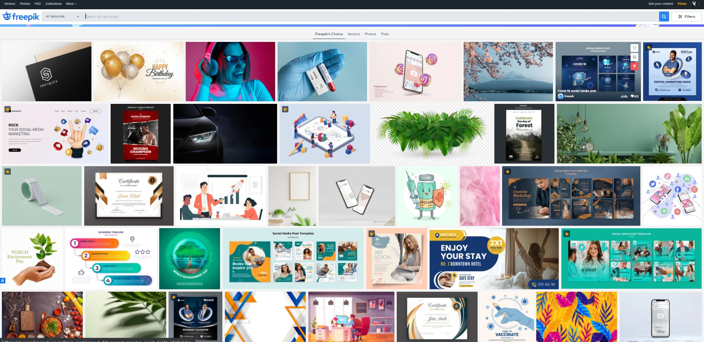
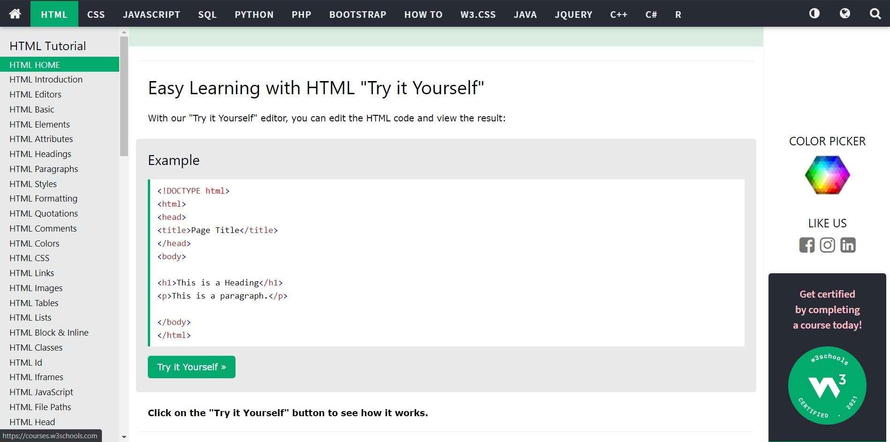

Research
A lot of things were understood in all the practical classes. So a lot of research were not needed. The exact keywords for searching what needed was known. Some websites were visited to get ideas about what tags to use in the html for a specific details, which CSS tag to use for speacific presentation. Some websites were visited to get the pictures used in this websites and so on.
All the images below except the facebook signup page are linked with their official websites.
Comparisions
For the design of my websites, most of them were designed by myself. For the development of the webpage I remembered a common type of design so I researched a similar type of design in mind.
As seen in the first comparision above the design are quite similar, the firwt one became the base for the design of the Home page. Then the design of blogs,CV and research were random. I played a little with wireframe and they were the outcome design, which I decided to use for the blog CV and this page.
For the contact us page , the facebook sign up page struck my mind and decided to use that page as a base design for the contact page. The comparision between them can be seen in the second comparision. Since the page idea os from the older version of facebook sign up, so it is not linked.
Reached Websites

Finally for the reached websites. W3schools is one of the most popular sites to refer to for finding out which tag to use for what purpose. Whenever forgetten which tag to use for what purpose. This page helped a lot in writing tags in HTML, CSS and Javascript.
For getting the images for the websites I used freepik. This recommended site had a lot of options to choose from. Every picture used in this site except the profile picture for CV is from this website i.e freepik